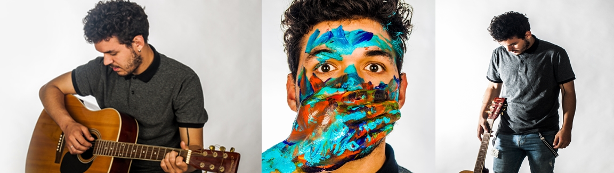

Gonçalo Brás
Gonçalo Alexandre Ribeiro Brás nasceu a 16 de abril de 1998 com apenas 6 anos de idade pintou o seu primeiro quadro que se tornou tão famoso que foi vendido em leilão por 5 milhões de euros, atualmente vive em marrocos e possui uma vasta gama de camelos no seu quintal. Aos 19 anos formou-se em artes plasticas participando em diversas exposições a par de Pablo Picasso
Acabou por cair na desgraça depois de ter consumido 4 kilos de cocaina em apenas 2 horas. Passado 2 dias Gonçalo estava recuperado mas a sua sáude mental não estava bem e a 23 de desembro de 2001 o artista corta um braço em plena praça pública com cerca de 4 mil pessoas a assistirem. Nesse mesmo momento Gonçalo Brás acaba por ser internado no hospital Júlio de matos acabando por se suicidar com um garfo espetado no olho.
Gonçalo Brás tornou-se assim um icone da pintura mundial atraindo varias pessoas a cidade de lisboa